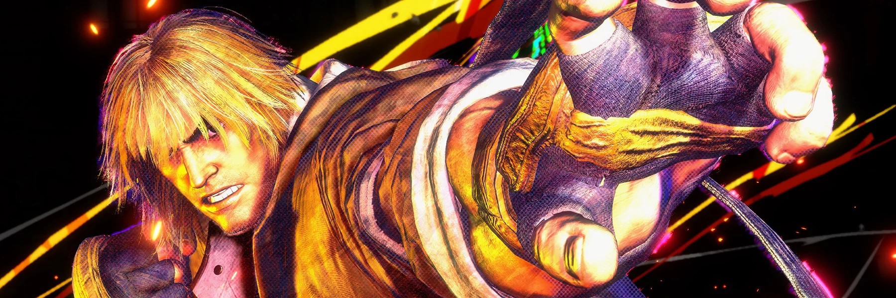
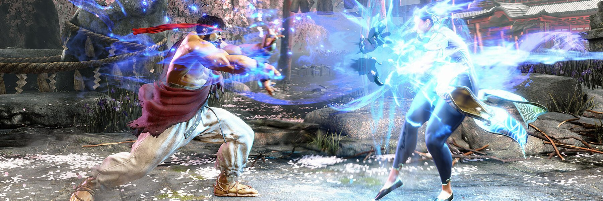
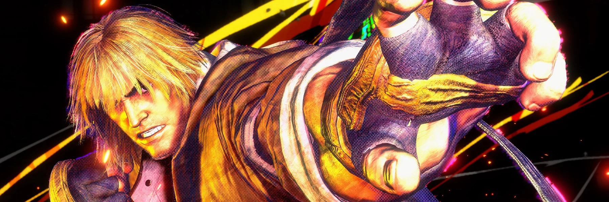
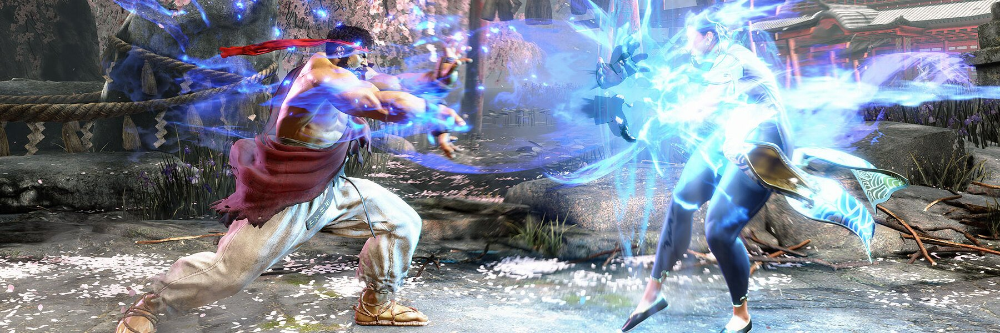
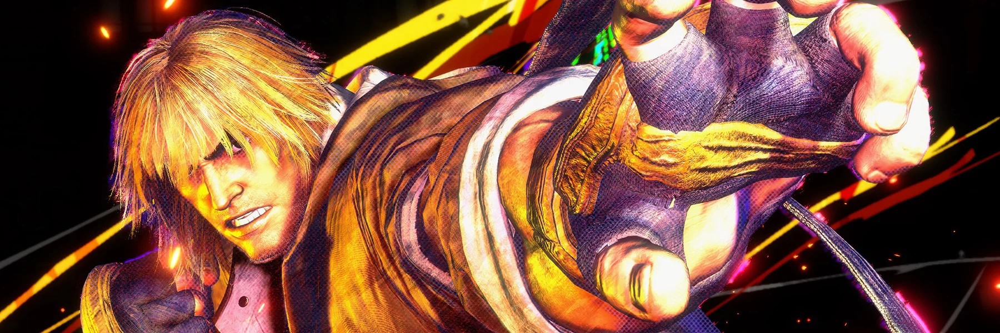
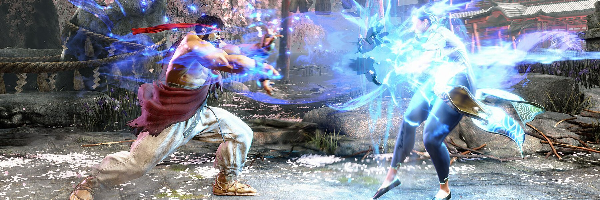
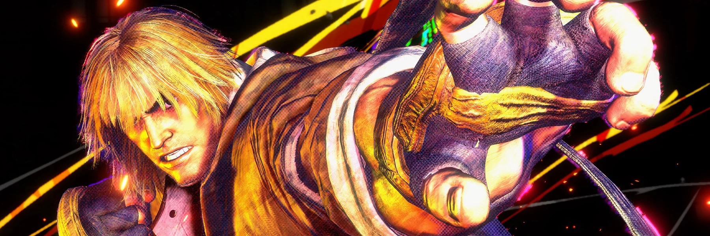
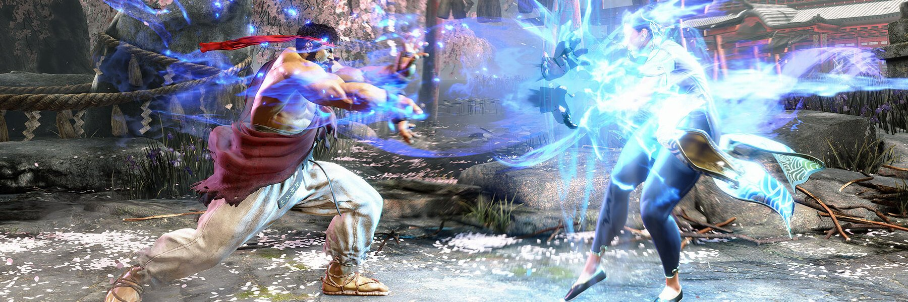

Os torneios de "Street Fighter" são eventos competitivos onde jogadores de todo o mundo se reúnem para competir em partidas do jogo. Esses torneios são organizados por diversas entidades, incluindo empresas de jogos, organizações de eSports e comunidades de jogadores. Aqui estão alguns dos torneios mais conhecidos e reconhecidos da série "Street Fighter":f
O Capcom Pro Tour (CPT) é o principal circuito competitivo oficial de "Street Fighter", organizado pela Capcom. Este torneio foi estabelecido para criar uma estrutura formal para competições de "Street Fighter" em todo o mundo e proporcionar aos jogadores profissionais a oportunidade de competir em uma série de eventos oficiais. A cada ano, o CPT consiste em uma série de torneios em todo o mundo, onde os jogadores competem para acumular pontos. Esses pontos são concedidos aos melhores colocados em cada evento, e os jogadores com mais pontos no final da temporada se qualificam para o Capcom Cup, o evento final do CPT. O Capcom Cup é o ápice do CPT e reúne os melhores jogadores de "Street Fighter" do mundo para competir pelo título de campeão mundial e uma grande premiação em dinheiro. O evento é um espetáculo emocionante para os fãs do jogo, com partidas de alto nível e momentos memoráveis. O CPT não apenas promove a competição de alto nível, mas também fortalece a comunidade de "Street Fighter" ao redor do mundo, proporcionando aos jogadores a oportunidade de se destacarem, ganharem reconhecimento e conectarem-se com outros jogadores e fãs. No geral, o Capcom Pro Tour é uma parte essencial do cenário competitivo de "Street Fighter" e contribui significativamente para a emoção e a popularidade do jogo em todo o mundo.
O Evolution Championship Series, mais conhecido como EVO, é um dos maiores e mais prestigiados torneios de jogos de luta do mundo. O evento acontece anualmente nos Estados Unidos e atrai jogadores de todo o mundo para competir em uma variedade de jogos de luta, incluindo "Street Fighter". O EVO é conhecido por sua atmosfera única e emocionante, com milhares de jogadores e fãs se reunindo para celebrar a paixão pelos jogos de luta. O evento é famoso por suas partidas incrivelmente competitivas, momentos emocionantes e rivalidades lendárias. "Street Fighter" é tradicionalmente um dos jogos principais do EVO, e a competição de "Street Fighter" é sempre um dos pontos altos do evento. Os melhores jogadores do mundo se enfrentam em batalhas intensas, com milhões de espectadores assistindo online e pessoalmente. Além das competições, o EVO também apresenta uma série de atividades e eventos paralelos, incluindo painéis de discussão, sessões de autógrafos, demonstrações de jogos e muito mais. É verdadeiramente uma celebração da cultura dos jogos de luta e uma oportunidade para os jogadores se reunirem e compartilharem sua paixão pelo gênero. Em resumo, o EVO é um dos eventos mais importantes e emocionantes do calendário de jogos de luta, e é um momento imperdível para qualquer fã ou jogador de "Street Fighter".
O Red Bull Kumite é um torneio de "Street Fighter" que se destaca por sua atmosfera única e competição de alto nível. Organizado pela Red Bull, o Kumite reúne alguns dos melhores jogadores do mundo para competir em uma série de partidas emocionantes. O evento é conhecido por sua produção espetacular e pela atmosfera intensa, com uma plateia apaixonada e uma energia contagiante. Os jogadores competem em uma variedade de formatos, incluindo partidas individuais, equipes e até mesmo desafios especiais. Além das competições, o Red Bull Kumite também apresenta uma série de atividades paralelas, como sessões de autógrafos, demonstrações de jogos, painéis de discussão e muito mais. É uma oportunidade para os fãs se envolverem com a comunidade de "Street Fighter" e celebrarem sua paixão pelo jogo. O Red Bull Kumite é considerado um dos principais eventos de "Street Fighter" do ano e atrai jogadores e espectadores de todo o mundo. Com sua combinação única de competição de alto nível e entretenimento emocionante, o Kumite continua a ser um ponto alto do calendário competitivo de jogos de luta.
O CEO, ou Community Effort Orlando, é um dos principais eventos de jogos de luta realizados anualmente em Orlando, Flórida. Fundado por Alex Jebailey, o CEO é conhecido por sua atmosfera única e competitiva, além de suas produções espetaculares e temáticas. O CEO atrai jogadores e fãs de todo o mundo para competir em uma variedade de jogos de luta, incluindo "Street Fighter". O torneio apresenta uma série de competições individuais e por equipes, bem como eventos paralelos, como desafios de exibição, sessões de autógrafos, painéis de discussão e muito mais. Uma das características mais marcantes do CEO são seus temas anuais, que incluem lutas de luta livre, fantasias e outros elementos que adicionam uma camada extra de diversão e entretenimento ao evento. A atmosfera única e o alto nível de competição tornam o CEO um dos eventos mais populares e emocionantes do cenário de jogos de luta. Além das competições, o CEO também é uma oportunidade para os jogadores e fãs se reunirem, socializarem e celebrarem sua paixão pelos jogos de luta. Com sua combinação de competição acirrada e entretenimento cativante, o CEO continua a ser um destaque do calendário competitivo de jogos de luta a cada ano.
O Combo Breaker é outro evento de destaque no cenário competitivo de jogos de luta. Realizado anualmente em Illinois, nos Estados Unidos, o Combo Breaker atrai uma grande variedade de jogadores e fãs de todo o mundo. O torneio apresenta uma ampla gama de jogos de luta, incluindo "Street Fighter", e oferece competições individuais e por equipe em diversos formatos. Além das competições, o Combo Breaker também oferece uma série de eventos paralelos, como sessões de autógrafos, demonstrações de jogos, painéis de discussão, entre outros. O Combo Breaker é conhecido por sua ênfase na inclusão e na diversidade, bem como por sua atmosfera acolhedora e receptiva. O evento busca proporcionar uma experiência positiva para todos os participantes, independentemente do nível de habilidade ou experiência. Com sua combinação de competição de alto nível, entretenimento variado e uma comunidade vibrante de jogadores e fãs, o Combo Breaker é reconhecido como um dos principais eventos de jogos de luta do ano e continua a crescer em popularidade a cada edição.